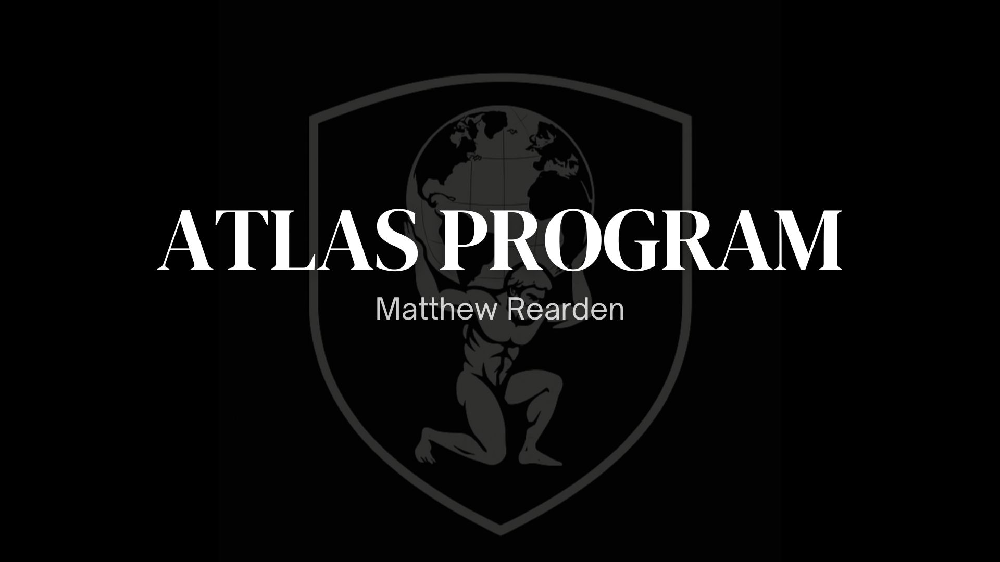

<!DOCTYPE html>
<html lang="fr">
<head>
<meta charset="UTF-8">
<meta name="viewport" content="width=device-width, initial-scale=1.0">
<title>Diagnostic ATLAS</title>
<style>
  @import url('https://fonts.googleapis.com/css2?family=Cormorant+Garamond:ital,wght@0,400;0,600;0,700&family=DM+Sans:wght@400;500;600;700&display=swap');

  * { margin: 0; padding: 0; box-sizing: border-box; }

  :root {
    --black: #000000;
    --white: #ffffff;
    --bg: #000000;
    --surface: #0c0c0c;
    --surface2: #141414;
    --border: #1e1e1e;
    --border2: #2a2a2a;
    --text: #e8e8e8;
    --text2: #aaaaaa;
    --text3: #666666;
    --text4: #444444;
    --accent1: #C9A84C;
    --accent2: #D4AF37;
    --blue: #3B82F6;
    --purple: #8B5CF6;
    --amber: #F59E0B;
    --redatlas: #A64446;
    --red: #DC2626;
    --red2: #EF4444;
    --serif: 'Cormorant Garamond', Georgia, serif;
    --sans: 'DM Sans', -apple-system, sans-serif;
  }

  body {
    background: var(--bg);
    color: var(--text);
    font-family: var(--sans);
    min-height: 100vh;
    display: flex;
    justify-content: center;
    padding: 40px 24px;
    -webkit-font-smoothing: antialiased;
  }

  #app { max-width: 680px; width: 100%; }

  @media (max-width: 600px) {
    body { padding: 20px 12px; }
    #app { max-width: 100%; }
  }

  .logo { display: flex; align-items: center; justify-content: center; margin-bottom: 40px; }
  .logo img { max-width: 220px; height: auto; }
  .logo-sm { justify-content: flex-start; margin-bottom: 8px; }
  .logo-sm img { max-width: 140px; }

  .intro { text-align: center; padding: 32px 0; }
  .intro h1 { font-family: var(--serif); font-size: 36px; font-weight: 700; margin-bottom: 8px; color: var(--text); line-height: 1.2; }
  .intro .subtitle { font-size: 14px; color: var(--text3); margin-bottom: 48px; letter-spacing: 0.5px; }
  .intro-box { text-align: left; padding: 28px; background: var(--surface); border: 1px solid var(--border); border-radius: 12px; margin-bottom: 40px; }
  .intro-box p { font-size: 15px; color: var(--text2); line-height: 1.75; margin-bottom: 16px; }
  .intro-box p:last-child { margin-bottom: 0; opacity: 0.6; font-size: 13px; }
  .intro-box strong { color: var(--text); }

  .btn-primary { background: var(--accent1); color: var(--black); border: none; padding: 16px 44px; border-radius: 6px; font-size: 15px; font-weight: 600; cursor: pointer; font-family: var(--sans); letter-spacing: 0.5px; transition: all 0.2s; display: inline-block; }
  .btn-primary:hover { background: #d4b356; transform: translateY(-1px); }
  .btn-primary:active { transform: translateY(0); }
  .btn-primary:disabled { opacity: 0.6; cursor: wait; transform: none; }

  .btn-ghost { background: none; border: 1px solid var(--border2); color: var(--text3); padding: 10px 20px; border-radius: 6px; cursor: pointer; font-size: 13px; font-family: var(--sans); width: 100%; transition: all 0.2s; }
  .btn-ghost:hover { border-color: var(--text3); color: var(--text2); }

  .disclaimer { font-size: 11px; color: var(--text4); margin-top: 24px; line-height: 1.6; text-align: center; }

  .quiz-header { display: flex; justify-content: space-between; align-items: center; margin-bottom: 8px; }
  .quiz-counter { font-size: 13px; color: var(--text4); font-variant-numeric: tabular-nums; }
  .progress-track { height: 2px; background: var(--border); border-radius: 1px; margin-bottom: 28px; overflow: hidden; }
  .progress-fill { height: 100%; background: var(--redatlas); border-radius: 1px; transition: width 0.4s ease; }
  .bloc-tag { display: flex; align-items: center; gap: 8px; margin-bottom: 24px; }
  .bloc-tag span:first-child { font-size: 16px; }
  .bloc-tag span:last-child { font-size: 10px; text-transform: uppercase; letter-spacing: 2px; color: var(--text4); }

  .question-text { font-family: var(--serif); font-size: 22px; font-weight: 400; color: var(--text); margin-bottom: 32px; line-height: 1.45; }

  .options { display: flex; flex-direction: column; gap: 10px; }
  .option-btn { padding: 18px 22px; background: var(--surface); border: 1px solid var(--border); border-radius: 10px; color: var(--text2); font-size: 14px; text-align: left; cursor: pointer; transition: all 0.2s ease; line-height: 1.55; font-family: var(--sans); }
  .option-btn:hover { border-color: var(--accent2); color: var(--text); background: var(--surface2); }
  .option-btn.selected { border-color: var(--accent1); background: rgba(201, 168, 76, 0.08); color: var(--text); }
  .option-btn.faded { opacity: 0.4; }

  .back-btn { background: none; border: none; color: var(--text4); font-size: 13px; cursor: pointer; margin-top: 20px; padding: 8px 0; font-family: var(--sans); transition: color 0.2s; }
  .back-btn:hover { color: var(--text2); }

  .result-label { font-size: 13px; text-transform: uppercase; letter-spacing: 3px; color: var(--text3); text-align: center; margin-bottom: 12px; }
  .result-title { font-family: var(--serif); font-size: 30px; font-weight: 700; text-align: center; margin-bottom: 8px; line-height: 1.3; }
  .result-mixed { font-size: 13px; color: var(--text3); text-align: center; margin-bottom: 0; }

  .scores-box { margin: 32px 0; padding: 20px 24px; background: var(--surface); border-radius: 12px; border: 1px solid var(--border); }
  .scores-label { font-size: 10px; text-transform: uppercase; letter-spacing: 2px; color: var(--text4); margin-bottom: 16px; }
  .score-row { margin-bottom: 12px; }
  .score-row:last-child { margin-bottom: 0; }
  .score-info { display: flex; justify-content: space-between; margin-bottom: 5px; }
  .score-name { font-size: 12px; color: var(--text3); }
  .score-name.primary { font-weight: 600; }
  .score-pts { font-size: 12px; color: var(--text4); }
  .score-bar { height: 4px; background: var(--border); border-radius: 2px; overflow: hidden; }
  .score-bar-fill { height: 100%; border-radius: 2px; transition: width 1.2s ease; }

  .result-card { padding: 28px; background: var(--surface); border-radius: 16px; border: 1px solid var(--border); margin-bottom: 24px; }
  .result-card p { font-size: 15px; line-height: 1.75; color: var(--text2); margin-bottom: 16px; }
  .analogy-box { padding: 18px 20px; border-radius: 8px; border-left: 3px solid; margin-bottom: 24px; font-style: italic; font-size: 14px; line-height: 1.7; color: var(--text2); }

  .section-label { font-size: 11px; text-transform: uppercase; letter-spacing: 2px; font-weight: 700; margin-bottom: 14px; }
  .meaning-item { display: flex; gap: 10px; margin-bottom: 10px; align-items: flex-start; }
  .meaning-arrow { font-size: 14px; margin-top: 2px; }
  .meaning-text { font-size: 14px; color: var(--text2); line-height: 1.6; }

  .priorities-box { margin-top: 28px; padding: 24px; background: var(--bg); border-radius: 12px; }
  .priority-item { display: flex; gap: 14px; margin-bottom: 14px; align-items: flex-start; }
  .priority-item:last-child { margin-bottom: 0; }
  .priority-num { min-width: 30px; height: 30px; border-radius: 50%; display: flex; align-items: center; justify-content: center; font-size: 13px; font-weight: 700; flex-shrink: 0; }
  .priority-text { font-size: 14px; color: var(--text2); line-height: 1.6; padding-top: 5px; }

  .cta-box { text-align: center; padding: 36px 28px; background: var(--surface); border-radius: 16px; border: 1px solid var(--border); margin-bottom: 24px; }
  .cta-box .cta-sub { font-size: 13px; color: var(--text3); margin-bottom: 6px; }
  .cta-box .cta-main { font-family: var(--serif); font-size: 22px; font-weight: 600; color: var(--text); margin-bottom: 24px; }
  .cta-box .cta-note { font-size: 12px; color: var(--text4); margin-top: 14px; }

  /* Form */
  .form-fields { display: none; flex-direction: column; gap: 14px; margin-top: 20px; animation: fadeIn 0.35s ease forwards; }
  .form-fields.visible { display: flex; }
  .form-input { padding: 14px 18px; background: var(--bg); border: 1px solid var(--border2); border-radius: 8px; color: var(--text); font-size: 14px; font-family: var(--sans); outline: none; transition: border-color 0.2s; width: 100%; }
  .form-input::placeholder { color: var(--text4); }
  .form-input:focus { border-color: var(--accent1); }
  .form-checkbox-row { display: flex; align-items: flex-start; gap: 10px; text-align: left; cursor: pointer; }
  .form-checkbox-row input[type="checkbox"] { margin-top: 3px; accent-color: var(--accent1); width: 16px; height: 16px; flex-shrink: 0; cursor: pointer; }
  .form-checkbox-label { font-size: 13px; color: var(--text2); line-height: 1.5; }
  .form-checkbox-label a { color: var(--accent1); text-decoration: none; }
  .form-checkbox-label a:hover { text-decoration: underline; }
  .form-error { font-size: 12px; color: var(--red2); display: none; }
  .form-error.visible { display: block; }
  .form-success { text-align: center; padding: 24px 0; animation: fadeIn 0.35s ease forwards; }
  .form-success .check-icon { width: 48px; height: 48px; border-radius: 50%; background: rgba(201,168,76,0.15); border: 2px solid var(--accent1); display: flex; align-items: center; justify-content: center; margin: 0 auto 16px; font-size: 22px; color: var(--accent1); }
  .form-success p { font-size: 15px; color: var(--text2); line-height: 1.6; margin-bottom: 8px; }
  .form-success p:last-child { font-size: 13px; color: var(--text4); }
  .form-privacy { font-size: 11px; color: var(--text4); text-align: center; margin-top: 8px; }

  @keyframes fadeIn { from { opacity: 0; transform: translateY(12px); } to { opacity: 1; transform: translateY(0); } }
  .fade-in { animation: fadeIn 0.35s ease forwards; }
  @keyframes slideUp { from { opacity: 0; transform: translateY(24px); } to { opacity: 1; transform: translateY(0); } }
  .slide-up { animation: slideUp 0.5s ease forwards; }
  .stagger-1 { animation-delay: 0.1s; opacity: 0; }
  .stagger-2 { animation-delay: 0.2s; opacity: 0; }
  .stagger-3 { animation-delay: 0.3s; opacity: 0; }
  .stagger-4 { animation-delay: 0.4s; opacity: 0; }
  .stagger-5 { animation-delay: 0.5s; opacity: 0; }

  @media (max-width: 600px) {
    .intro h1 { font-size: 28px; }
    .intro-box { padding: 20px; }
    .question-text { font-size: 19px; margin-bottom: 24px; }
    .option-btn { padding: 15px 18px; font-size: 13.5px; }
    .result-card { padding: 22px; }
    .result-title { font-size: 24px; }
    .scores-box { padding: 16px 18px; }
    .cta-box { padding: 28px 20px; }
    .priorities-box { padding: 18px; }
    .btn-primary { padding: 14px 32px; font-size: 14px; width: 100%; }
    .form-input { font-size: 16px !important; }
  }
</style>
</head>
<body>
<div id="app"></div>
<script>
const QUESTIONS=[{id:1,bloc:0,q:"Au cours des 7 derniers jours, combien de fois t'es-tu réveillé avec une érection matinale ?",opts:[{t:"Tous les jours ou presque (6-7 fois)",s:{A:2,C:2,D:2}},{t:"Régulièrement (3-5 fois)",s:{A:1,C:1,D:1}},{t:"Rarement (1-2 fois)",s:{B:1}},{t:"Jamais ou quasi jamais",s:{B:2,E:2}}]},{id:2,bloc:0,q:"Quand tu as une érection matinale, comment décrirais-tu sa rigidité ?",opts:[{t:"Très rigide, comme avant",s:{A:2,C:2,D:2}},{t:"Correcte mais pas aussi dure qu'avant",s:{A:1,C:1,B:1}},{t:"Molle, partielle",s:{B:2,E:1}},{t:"Je n'en ai plus",s:{B:2,E:2}}]},{id:3,bloc:0,q:"Par rapport à il y a 2-3 ans, tes érections matinales sont...",opts:[{t:"Identiques ou meilleures",s:{A:2,C:2,D:1}},{t:"Légèrement moins fréquentes ou rigides",s:{B:1,A:1}},{t:"Nettement moins fréquentes ou rigides",s:{B:2,E:1}},{t:"Quasiment disparues",s:{B:2,E:2}}]},{id:4,bloc:0,q:"T'arrive-t-il de te réveiller la nuit avec une érection ?",opts:[{t:"Oui, régulièrement",s:{A:2,C:2,D:2}},{t:"Parfois",s:{A:1,C:1,D:1}},{t:"Rarement",s:{B:1,E:1}},{t:"Jamais",s:{B:2,E:2}}]},{id:5,bloc:0,q:"As-tu remarqué un lien entre la qualité de ton sommeil et tes érections matinales ?",opts:[{t:"Oui, quand je dors bien j'ai des érections matinales",s:{A:1,C:1,B:1}},{t:"Pas vraiment de lien",s:{D:1,E:1}},{t:"Je dors mal ET je n'ai pas d'érections matinales",s:{B:2,E:1}},{t:"Je dors bien mais pas d'érections matinales quand même",s:{B:2,E:2}}]},{id:6,bloc:0,q:"Après une nuit de sommeil réparateur (7-8h, sans alcool), as-tu généralement une érection au réveil ?",opts:[{t:"Oui, systématiquement",s:{A:2,C:2,D:2}},{t:"Souvent",s:{A:1,C:1,D:1}},{t:"Rarement",s:{B:2,E:1}},{t:"Non, même dans ces conditions",s:{B:2,E:2}}]},{id:7,bloc:0,q:"Si tu fais une sieste, t'arrive-t-il de te réveiller avec une érection ?",opts:[{t:"Oui, souvent",s:{A:2,C:2,D:2}},{t:"Parfois",s:{A:1,C:1,D:1}},{t:"Rarement ou jamais",s:{B:1,E:1}},{t:"Je ne fais pas de siestes",s:{}}]},{id:8,bloc:1,q:"Quand tu te masturbes seul, arrives-tu à obtenir une érection ?",opts:[{t:"Oui, facilement et rapidement",s:{A:2,B:2,C:2}},{t:"Oui, mais ça prend plus de temps qu'avant",s:{A:1,B:1,C:1}},{t:"Difficilement, elle est souvent partielle",s:{D:2,E:1}},{t:"Non, même en me masturbant c'est difficile",s:{D:2,E:2}}]},{id:9,bloc:1,q:"Une fois en érection pendant la masturbation, arrives-tu à la maintenir ?",opts:[{t:"Oui, sans problème jusqu'à l'éjaculation",s:{A:2,B:2,C:2}},{t:"Oui mais elle fluctue un peu",s:{A:1,B:1,C:1}},{t:"Elle retombe souvent avant la fin",s:{D:1,E:1}},{t:"Je n'arrive pas à la maintenir",s:{D:2,E:2}}]},{id:10,bloc:1,q:"As-tu besoin de stimulation pornographique pour obtenir une érection en te masturbant ?",opts:[{t:"Non, mon imagination suffit",s:{A:2,C:2}},{t:"Ça aide mais ce n'est pas indispensable",s:{A:1,B:1,C:1}},{t:"Oui, j'en ai besoin sinon c'est difficile",s:{B:1,A:1}},{t:"Même avec, c'est difficile",s:{D:1,E:2}}]},{id:11,bloc:1,q:"Quand ta partenaire te touche ou te caresse (sans rapport), ton corps réagit-il ?",opts:[{t:"Oui, je sens une réponse physique",s:{A:2,C:2}},{t:"Parfois, ça dépend du contexte",s:{A:1,B:1,C:1}},{t:"Rarement, même avec stimulation directe",s:{D:2,B:1}},{t:"Non, plus de réaction au toucher",s:{D:2,E:2}}]},{id:12,bloc:1,q:"Si tu compares ta réponse au toucher physique aujourd'hui vs il y a quelques années...",opts:[{t:"C'est pareil, mon corps réagit bien",s:{A:2,C:2}},{t:"Un peu moins réactif mais ça fonctionne",s:{A:1,B:1,C:1}},{t:"Nettement moins réactif",s:{D:2,B:2}},{t:"Quasi plus de réaction",s:{D:2,E:2}}]},{id:13,bloc:1,q:"Arrives-tu à obtenir une érection avec une stimulation physique directe même quand tu n'es pas \"dans l'ambiance\" mentalement ?",opts:[{t:"Oui, le contact physique suffit",s:{A:2,B:2,C:2}},{t:"Ça dépend, parfois oui parfois non",s:{A:1,B:1,C:1}},{t:"Rarement, il me faut les deux",s:{D:1,E:1}},{t:"Non, la stimulation physique seule ne suffit plus",s:{D:2,E:2}}]},{id:14,bloc:1,q:"Pendant un rapport, si tu perds ton érection, arrives-tu à la récupérer avec une stimulation manuelle ?",opts:[{t:"Oui, facilement",s:{A:2,B:1,C:2}},{t:"Oui mais ça prend du temps",s:{A:1,B:1,C:1}},{t:"Difficilement",s:{D:1,B:2}},{t:"Non, une fois perdue c'est fini",s:{D:2,E:2}}]},{id:15,bloc:2,q:"En pensant à un fantasme ou une situation excitante (sans te toucher), arrives-tu à sentir un début d'érection ?",opts:[{t:"Oui, facilement",s:{C:2}},{t:"Parfois, quand je suis détendu",s:{A:1,C:1}},{t:"Rarement",s:{A:2,B:1,D:1}},{t:"Non, les pensées seules ne provoquent plus rien",s:{A:2,B:2,D:2,E:1}}]},{id:16,bloc:2,q:"Avant un rapport avec ta partenaire, ressens-tu...",opts:[{t:"De l'excitation et de l'anticipation positive",s:{C:2}},{t:"Un mélange d'excitation et d'appréhension",s:{A:2,C:1}},{t:"Surtout de l'anxiété ou de la pression",s:{A:2,B:1}},{t:"De l'indifférence ou de l'évitement",s:{B:1,E:1}}]},{id:17,bloc:2,q:"Pendant les préliminaires avec ta partenaire, ton érection est généralement...",opts:[{t:"Présente et stable",s:{C:2}},{t:"Présente mais fragile (peut retomber)",s:{A:2,C:1}},{t:"Difficile à obtenir",s:{A:2,B:2,D:1}},{t:"Absente",s:{B:2,D:2,E:2}}]},{id:18,bloc:2,q:"As-tu des pensées parasites pendant l'acte (performance, jugement, peur de perdre l'érection) ?",opts:[{t:"Rarement ou jamais",s:{C:2}},{t:"Parfois mais j'arrive à les gérer",s:{A:1,C:1}},{t:"Souvent, elles me perturbent",s:{A:2,B:1}},{t:"Constamment, je n'arrive pas à être présent",s:{A:2,B:2}}]},{id:19,bloc:2,q:"Si tu as eu d'autres partenaires (passées ou actuelles), le problème était/est...",opts:[{t:"Spécifique à ma partenaire actuelle",s:{C:2}},{t:"Présent avec certaines mais pas toutes",s:{C:1,A:1}},{t:"Présent avec toutes mes partenaires",s:{A:2,B:2,D:1,E:1}},{t:"Je n'ai eu qu'une seule partenaire",s:{}}]},{id:20,bloc:2,q:"Dans une situation nouvelle ou excitante (nouveau lieu, lingerie, jeu de rôle...), tes érections sont-elles meilleures ?",opts:[{t:"Oui, nettement",s:{A:1,C:2}},{t:"Un peu mieux",s:{A:1,C:1}},{t:"Pas vraiment de différence",s:{B:2,D:1,E:1}},{t:"Non, c'est pareil voire pire (plus de pression)",s:{A:2,B:1}}]},{id:21,bloc:2,q:"Si ta partenaire prend l'initiative et te met à l'aise (pas de pression), ça change quelque chose ?",opts:[{t:"Oui, grosse différence positive",s:{A:2,C:2}},{t:"Un peu mieux",s:{A:1,C:1}},{t:"Pas vraiment",s:{B:2,D:1}},{t:"Non, ça ne change rien",s:{B:2,D:2,E:1}}]},{id:22,bloc:3,q:"Depuis quand as-tu remarqué ces difficultés ?",opts:[{t:"Récemment (moins de 6 mois), suite à un événement stressant",s:{A:2}},{t:"Progressivement sur 1-2 ans",s:{B:2,A:1}},{t:"Depuis plusieurs années, ça s'aggrave doucement",s:{B:2,E:1}},{t:"Depuis toujours ou très longtemps",s:{D:1,E:1}}]},{id:23,bloc:3,q:"As-tu des problèmes de santé connus ? (diabète, hypertension, problèmes cardiaques, cholestérol...)",opts:[{t:"Non, aucun",s:{A:1,C:1}},{t:"Oui, mais bien contrôlés",s:{B:1}},{t:"Oui, pas bien contrôlés ou récents",s:{B:2,E:1}},{t:"Oui, plusieurs",s:{B:2,E:2}}]},{id:24,bloc:3,q:"Prends-tu des médicaments régulièrement ? (antidépresseurs, bêta-bloquants, etc.)",opts:[{t:"Non",s:{A:1,C:1}},{t:"Oui, mais j'ai commencé après le début des problèmes",s:{A:1,B:1}},{t:"Oui, et mes problèmes ont commencé après",s:{B:2}},{t:"Oui, plusieurs médicaments",s:{B:2,E:1}}]},{id:25,bloc:3,q:"Comment décrirais-tu ton niveau de stress ou d'anxiété général dans ta vie ?",opts:[{t:"Faible, je gère bien",s:{C:1,D:1}},{t:"Modéré, des hauts et des bas",s:{A:1,B:1,C:1}},{t:"Élevé, stress chronique",s:{A:2,B:2}},{t:"Très élevé, anxiété constante",s:{A:2,B:2}}]}];

const BLOCS=[{name:"Érections Nocturnes & Matinales",icon:"🌙"},{name:"Érections Réflexogènes",icon:"⚡"},{name:"Psychogènes & Contexte Partenaire",icon:"💭"},{name:"Contexte Global & Historique",icon:"📋"}];

const PROFILES={
  A:{name:"Le Purement Mental",color:"#3B82F6",icon:"🧠",summary:"Bonne nouvelle : ton corps fonctionne. Tes érections matinales sont là, tu réponds à la stimulation physique. Le \"hardware\" est intact.",detail:"Ton défi est ailleurs : c'est ton mental qui bloque le signal. L'anxiété de performance, les pensées parasites, la peur de \"ne pas y arriver\" créent une interférence entre ton cerveau et ton corps.",analogy:"C'est comme si tu avais une connexion WiFi parfaite, mais un pare-feu trop agressif qui bloque le signal.",meaning:["Tu n'as pas besoin de pilules ou de compléments","Ton système nerveux est \"coincé\" en mode alerte","La solution passe par la gestion du stress et la reconnexion corps-esprit"],priorities:["Apprendre à désactiver le mode \"performance\"","Recâbler la réponse de ton système nerveux","Reconstruire ta confiance progressivement"]},
  B:{name:"Le Tiraillé",color:"#F59E0B",icon:"⚡",summary:"Ton cas est le plus fréquent chez les hommes de 35-55 ans, et aussi le plus mal compris.",detail:"Ce qui se passe : tu as probablement une composante physique (sommeil dégradé, stress chronique, possible baisse hormonale ou facteurs cardiovasculaires) ET une couche d'anxiété qui s'est greffée par-dessus.",analogy:"Le cercle vicieux classique : un problème physique crée quelques \"pannes\", l'anxiété s'installe, l'anxiété aggrave le problème, et tu ne sais plus ce qui est physique et ce qui est mental.",meaning:["Tu dois agir sur les DEUX fronts simultanément","Ignorer la composante physique = échec","Ignorer la composante mentale = échec aussi"],priorities:["Optimiser les fondamentaux (sommeil, stress, activité physique)","Investiguer les marqueurs de santé (bilan hormonal, cardiovasculaire)","Travailler le mental EN PARALLÈLE, pas après"]},
  C:{name:"Le Relationnel",color:"#8B5CF6",icon:"💑",summary:"Ton corps fonctionne parfaitement. Érections matinales, masturbation, fantasmes : tout est OK.",detail:"Mais avec ta partenaire actuelle, spécifiquement, ça coince. Ce n'est pas un problème d'érection. C'est un problème relationnel qui se manifeste par l'érection.",analogy:"Ça peut être une tension non-dite dans le couple, une perte de désir spécifique, un déséquilibre dans la dynamique, ou simplement une routine qui a éteint l'étincelle.",meaning:["Les pilules ne résoudront rien (ton corps marche)","Le \"problème\" est un symptôme, pas la cause","La solution passe par le relationnel, pas le médical"],priorities:["Identifier ce qui a changé dans ta dynamique de couple","Ouvrir le dialogue (ou le rouvrir) avec ta partenaire","Recréer du désir et de la connexion émotionnelle"]},
  D:{name:"Le Déconnecté",color:"#EF4444",icon:"🔌",summary:"Ton cas mérite une attention particulière.",detail:"Tu as des érections matinales (donc ton \"test hardware nocturne\" fonctionne), mais ta réponse à la stimulation physique directe est altérée. Ça peut indiquer une atteinte au niveau des nerfs périphériques, ceux qui transmettent le signal \"localement\".",analogy:"Important : ce n'est pas un diagnostic médical, mais un signal qui mérite investigation. Certaines causes sont tout à fait traitables.",meaning:["Une consultation médicale est recommandée","Parle spécifiquement de ta réponse au toucher à ton médecin","Certaines causes sont tout à fait traitables (diabète mal contrôlé, compression nerveuse...)"],priorities:["Consulter un médecin ou urologue pour investigation","Mentionner spécifiquement la différence érections matinales vs réflexe","En attendant, optimiser ce que tu contrôles (sommeil, stress, hygiène de vie)"]},
  E:{name:"L'Alarmé",color:"#DC2626",icon:"🚨",summary:"Je vais être direct avec toi : tes réponses indiquent que les trois types d'érection sont affectés. Matinales, réflexes, et avec partenaire.",detail:"Ce n'est pas \"dans ta tête\". Ton corps t'envoie un signal clair.",analogy:"Les troubles érectiles \"complets\" sont souvent un signe précoce de problèmes cardiovasculaires. Les traiter, c'est aussi protéger ta santé globale.",meaning:["Une investigation médicale est prioritaire","Les causes peuvent être hormonales, cardiovasculaires, neurologiques, ou médicamenteuses","La bonne nouvelle : une fois la cause identifiée, beaucoup sont traitables"],priorities:["Prendre RDV avec ton médecin traitant","Demander un bilan hormonal (testostérone totale et libre)","Évoquer un bilan cardiovasculaire si pas fait récemment"]}
};

// =============================================
// CONFIGURATION — Remplace l'URL ci-dessous par ton webhook Make
// =============================================
const MAKE_WEBHOOK_URL = 'https://hook.eu1.make.com/2xfq5cdmqsliqg3ywo90jzy74xmihbim';

const PROFILE_TAGS = { A:'profil-mental', B:'profil-tiraille', C:'profil-relationnel', D:'profil-deconnecte', E:'profil-alerte' };
const PROFILE_NAMES = { A:'Le Purement Mental', B:'Le Tiraillé', C:'Le Relationnel', D:'Le Déconnecté', E:'L\'Alarmé' };

let phase='intro', current=0, answers={}, scores={A:0,B:0,C:0,D:0,E:0}, selectedOption=null, animating=false;

function render(shouldScroll) {
  const app = document.getElementById('app');
  if (phase==='intro') app.innerHTML = renderIntro();
  else if (phase==='quiz') app.innerHTML = renderQuiz();
  else if (phase==='result') app.innerHTML = renderResult();
  bindEvents();
  setTimeout(() => {
    window.parent.postMessage({type:'atlas-resize',height:document.documentElement.scrollHeight},'*');
    if (shouldScroll) window.parent.postMessage({type:'atlas-scroll'},'*');
  }, 100);
}

function renderIntro() {
  return `<div class="intro fade-in">
    <div class="logo"></div>
    <h1>Diagnostic du Profil de Dysfonctionnement</h1>
    <p class="subtitle">Détermines la cause principale de <strong>ton impuissance</strong></p>
    <div class="intro-box">
      <p><strong>25 questions. 5 minutes. Un diagnostic personnalisé.</strong></p>
      <p>Ce questionnaire analyse tes <strong>3 types d'érection</strong> (nocturnes, réflexogènes, psychogènes) pour identifier ton profil et te donner des recommandations concrètes.</p>
      <p>Réponds honnêtement. Personne ne verra tes réponses sauf toi.</p>
    </div>
    <button class="btn-primary" data-action="start">Commencer le diagnostic →</button>
    <p class="disclaimer">Ce diagnostic n'est pas un avis médical. Il ne remplace pas une consultation avec un professionnel de santé.</p>
  </div>`;
}

function renderQuiz() {
  const q=QUESTIONS[current], bloc=BLOCS[q.bloc], pct=(current/QUESTIONS.length)*100;
  let optsHtml='';
  q.opts.forEach((o,i) => { const cls=selectedOption===i?'selected':(animating&&selectedOption!==null?'faded':''); optsHtml+=`<button class="option-btn ${cls}" data-action="answer" data-index="${i}">${o.t}</button>`; });
  return `<div class="fade-in">
    <div class="quiz-header"><div class="logo logo-sm"></div><span class="quiz-counter">${current+1}/${QUESTIONS.length}</span></div>
    <div class="progress-track"><div class="progress-fill" style="width:${pct}%"></div></div>
    <div class="bloc-tag"><span>${bloc.icon}</span><span>${bloc.name}</span></div>
    <h2 class="question-text">${q.q}</h2>
    <div class="options">${optsHtml}</div>
    ${current>0?'<button class="back-btn" data-action="back">← Question précédente</button>':''}
  </div>`;
}

function getResult() {
  const sorted=Object.entries(scores).sort((a,b)=>b[1]-a[1]);
  if(scores.E>=20&&sorted[0][0]==='E') return{primary:'E',secondary:null};
  if(scores.E>=20) return{primary:'E',secondary:sorted[0][0]!=='E'?sorted[0][0]:sorted[1][0]};
  const[first,second]=sorted;
  return{primary:first[0],secondary:(first[1]-second[1]<=3&&second[1]>0)?second[0]:null};
}

function renderResult() {
  const result=getResult(), p=PROFILES[result.primary], s=result.secondary?PROFILES[result.secondary]:null, maxScore=Math.max(...Object.values(scores));
  let scoresHtml=''; Object.entries(scores).sort((a,b)=>b[1]-a[1]).forEach(([key,val])=>{const pr=PROFILES[key],isPrimary=key===result.primary,w=maxScore>0?(val/maxScore)*100:0;scoresHtml+=`<div class="score-row"><div class="score-info"><span class="score-name${isPrimary?' primary':''}" style="color:${isPrimary?pr.color:''}">${pr.icon} ${pr.name}</span><span class="score-pts">${val} pts</span></div><div class="score-bar"><div class="score-bar-fill" style="width:${w}%;background:${isPrimary?pr.color:'#333'}"></div></div></div>`;});
  let meaningHtml=''; p.meaning.forEach(m=>{meaningHtml+=`<div class="meaning-item"><span class="meaning-arrow" style="color:${p.color}">→</span><span class="meaning-text">${m}</span></div>`;});
  let prioritiesHtml=''; p.priorities.forEach((pr,i)=>{prioritiesHtml+=`<div class="priority-item"><div class="priority-num" style="background:${p.color}18;border:1px solid ${p.color}44;color:${p.color}">${i+1}</div><span class="priority-text">${pr}</span></div>`;});
  const mixedLine=s?`<p class="result-mixed">Profil mixte avec ${s.icon} ${s.name}</p>`:'';
  const disclaimerExtra=result.primary==='E'?' Pour ce profil, une consultation médicale est fortement recommandée.':'';

  return `<div>
    <div class="slide-up stagger-2" style="text-align:center;margin-bottom:32px">
      <p class="result-label">Ton diagnostic</p>
      <h1 class="result-title" style="color:${p.color}">${p.icon} ${p.name}</h1>
      ${mixedLine}
    </div>
    <div class="scores-box slide-up stagger-3"><p class="scores-label">Répartition des scores</p>${scoresHtml}</div>
    <div class="result-card slide-up stagger-4">
      <p>${p.summary}</p><p>${p.detail}</p>
      <div class="analogy-box" style="background:${p.color}0a;border-left-color:${p.color}">${p.analogy}</div>
      <p class="section-label" style="color:${p.color}">Ce que ça signifie pour toi</p>${meaningHtml}
      <div class="priorities-box"><p class="section-label" style="color:${p.color}">Tes 3 priorités</p>${prioritiesHtml}</div>
    </div>
    <div class="cta-box slide-up stagger-5" id="cta-box">
      <p class="cta-sub">Tu vas recevoir par email</p>
      <p class="cta-main">Ton plan d'action personnalisé</p>
      <button class="btn-primary" id="cta-reveal-btn" data-action="reveal-form">Recevoir mon plan d'action →</button>
      <div class="form-fields" id="cta-form">
        <input type="text" class="form-input" id="input-prenom" placeholder="Prénom" autocomplete="given-name">
        <input type="email" class="form-input" id="input-email" placeholder="Email" autocomplete="email">
        <label class="form-checkbox-row">
          <input type="checkbox" id="input-newsletter" checked>
          <span class="form-checkbox-label">Je souhaite recevoir les Lettres hebdomadaires <a href="https://matthewrearden.substack.com/?showWelcome=true" target="_blank">ATLAS LETTER</a>.</span>
        </label>
        <p class="form-error" id="form-error">Merci de remplir tous les champs correctement.</p>
        <button class="btn-primary" id="btn-submit" data-action="submit-form">Recevoir mon plan d'action →</button>
        <p class="form-privacy">Tes données restent confidentielles. Pas de spam.</p>
      </div>
      <div class="form-success" id="form-success" style="display:none">
        <div class="check-icon">✓</div>
        <p>C'est envoyé. Vérifie ta boîte mail dans les prochaines minutes.</p>
        <p>Pense à checker tes spams si tu ne vois rien.</p>
      </div>
      <p class="cta-note">Programme ATLAS · Heureux & Vigoureux</p>
    </div>
    <button class="btn-ghost" data-action="restart">Refaire le diagnostic</button>
    <p class="disclaimer">Ce diagnostic n'est pas un avis médical. En cas de doute, consulte un professionnel de santé.${disclaimerExtra}</p>
  </div>`;
}

function bindEvents() {
  document.querySelectorAll('[data-action="start"]').forEach(b=>b.onclick=()=>{phase='quiz';render(true);});
  document.querySelectorAll('[data-action="restart"]').forEach(b=>b.onclick=()=>{phase='intro';current=0;answers={};scores={A:0,B:0,C:0,D:0,E:0};selectedOption=null;render(true);});
  document.querySelectorAll('[data-action="back"]').forEach(b=>b.onclick=goBack);
  document.querySelectorAll('[data-action="answer"]').forEach(b=>b.onclick=function(){handleAnswer(parseInt(this.dataset.index));});
  const revealBtn=document.getElementById('cta-reveal-btn');
  if(revealBtn){revealBtn.onclick=function(){this.style.display='none';document.getElementById('cta-form').classList.add('visible');setTimeout(()=>document.getElementById('input-prenom').focus(),100);setTimeout(()=>{window.parent.postMessage({type:'atlas-resize',height:document.documentElement.scrollHeight},'*');},200);};}
  const submitBtn=document.getElementById('btn-submit');
  if(submitBtn){submitBtn.onclick=submitForm;}
  const emailInput=document.getElementById('input-email');
  if(emailInput){emailInput.onkeydown=function(e){if(e.key==='Enter')submitForm();};}
}

function submitForm(){
  const prenom=document.getElementById('input-prenom').value.trim();
  const email=document.getElementById('input-email').value.trim();
  const newsletter=document.getElementById('input-newsletter').checked;
  const errorEl=document.getElementById('form-error');
  const submitBtn=document.getElementById('btn-submit');
  if(!prenom||!email||!email.includes('@')||!email.includes('.')){errorEl.classList.add('visible');return;}
  errorEl.classList.remove('visible');
  submitBtn.disabled=true; submitBtn.textContent='Envoi en cours...';
  const result=getResult();
  const payload={prenom:prenom,email:email,newsletter:newsletter,profil_tag:PROFILE_TAGS[result.primary],profil_nom:PROFILE_NAMES[result.primary],profil_secondaire_tag:result.secondary?PROFILE_TAGS[result.secondary]:'',profil_secondaire_nom:result.secondary?PROFILE_NAMES[result.secondary]:'',scores:scores};
  fetch(MAKE_WEBHOOK_URL,{method:'POST',headers:{'Content-Type':'application/json'},body:JSON.stringify(payload),mode:'no-cors'})
  .then(()=>{document.getElementById('cta-form').style.display='none';document.getElementById('form-success').style.display='block';setTimeout(()=>{window.parent.postMessage({type:'atlas-resize',height:document.documentElement.scrollHeight},'*');},100);})
  .catch(()=>{document.getElementById('cta-form').style.display='none';document.getElementById('form-success').style.display='block';});
}

function handleAnswer(idx){
  if(animating)return; selectedOption=idx; animating=true; render();
  const q=QUESTIONS[current],opt=q.opts[idx];
  Object.entries(opt.s).forEach(([k,v])=>{scores[k]=(scores[k]||0)+v;}); answers[current]=idx;
  setTimeout(()=>{selectedOption=null;animating=false;if(current<QUESTIONS.length-1){current++;phase='quiz';}else{phase='result';}render(true);},350);
}

function goBack(){
  if(current===0||animating)return;
  const prev=answers[current-1];
  if(prev!==undefined){const opt=QUESTIONS[current-1].opts[prev];Object.entries(opt.s).forEach(([k,v])=>{scores[k]-=v;});delete answers[current-1];}
  current--;render(true);
}

render();
</script>
</body>
</html>
